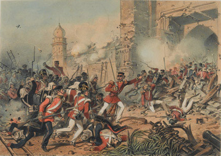
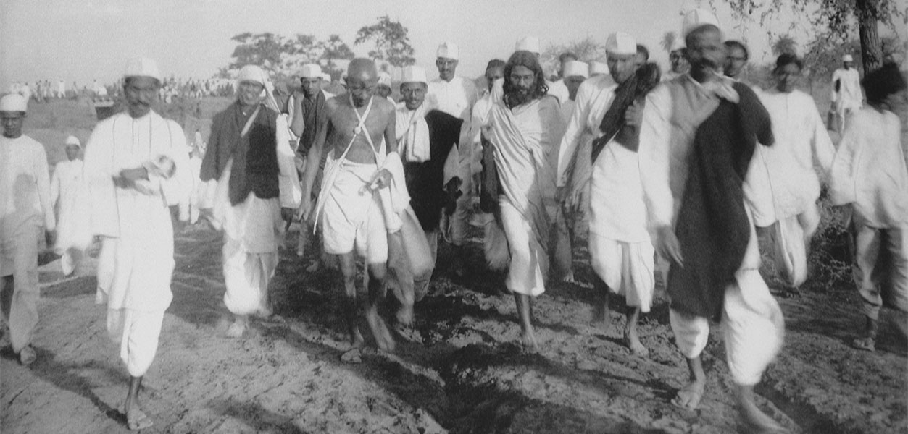
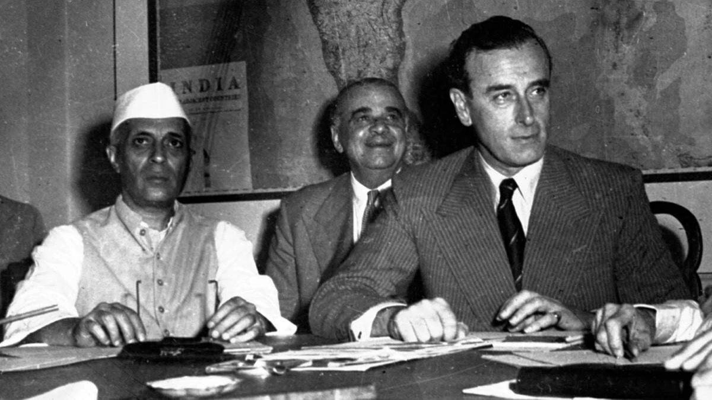

India's Struggle for Freedom
The journey to independence from British colonial rule (1757-1947)
Introduction
India's freedom struggle was a remarkable journey spanning nearly two centuries, leading to the country's independence from British rule on August 15, 1947. This historical movement involved countless individuals who fought against colonial oppression through various means, ranging from armed rebellion to non-violent civil disobedience.
The British East India Company arrived in India in the early 1600s as traders, but gradually expanded their influence and control. By 1757, after the Battle of Plassey, they began to establish political power, marking the beginning of British colonial rule in India.
This website explores the key events, prominent figures, and significant movements that shaped India's path to independence. Follow the timeline to journey through this crucial period in Indian history.
1757
Battle of Plassey - The British East India Company, under Robert Clive, defeats the Nawab of Bengal, establishing Company rule in Bengal and marking the beginning of British territorial control in India.
1857
The Great Revolt (First War of Independence) - A widespread uprising against British rule, beginning with sepoy mutinies and expanding into a larger rebellion.
1885
Formation of the Indian National Congress - A political organization founded to increase Indian representation in governance, which later became a leading force in the independence movement.
1915
Return of Mahatma Gandhi from South Africa - Gandhi's return marked the beginning of a new phase in India's freedom struggle, centered around non-violent resistance (Satyagraha).
1930
Salt March (Dandi March) - Led by Gandhi, this non-violent protest against the British salt monopoly became an iconic moment in the freedom struggle.
1942
Quit India Movement - A mass civil disobedience movement launched by Gandhi with the call for immediate independence.
"Do or Die" - Mahatma Gandhi's call to action during the Quit India Movement
1947
Independence and Partition - India gains independence from British rule on August 15, 1947, but is partitioned into India and Pakistan, leading to mass migration and violence.
